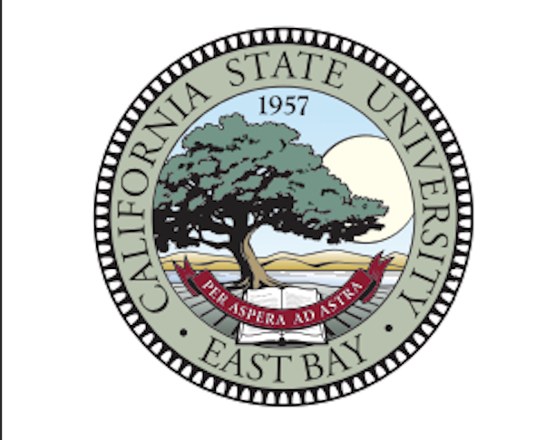

MS, Business Analytics
Coursework: Data Analytics, Machine Learning, Text Mining & GenAI, DBMS, Data Warehousing & Mining, Quant Analytics, Optimization for Analytics, Big Data.

Master's in Business Analytics · CSU East Bay · Dec 2025
Python, SQL, Tableau/Power BI, and applied ML. Building analytics that reduce cost and improve planning. Expanding Salesforce CRM skills for sales & ops reporting.
Coursework: Data Analytics, Machine Learning, Text Mining & GenAI, DBMS, Data Warehousing & Mining, Quant Analytics, Optimization for Analytics, Big Data.

Core CS/ML foundation: DSA, OOP, DBMS, OS, Web Programming, Data Warehousing & Mining, Machine Learning.
Built resource dashboards and EDA on HR/workforce data; reduced ops costs by 20% and improved planning by 25%.

Analyzed learner engagement; automated weekly reporting with Python/SQL (−20% manual effort); evaluated feature/UI impact on retention.
Outcome-first cards with quick metrics. Link to code and dashboards.
Random Forest model (75.9% accuracy) recommending crops from environmental factors. Consolidated multi-source data; fixed 189+ missing fields; shipped a Tableau dashboard.
Classifier to categorize inputs into mental-health intents (78% accuracy). Built preprocessing, tokenization, TF-IDF; analyzed sentiment & patterns.
Analyzed pipeline stages, conversion, and engagement. Built Tableau to track opps by region, size, rep; identified funnel bottlenecks and forecasting improvements.
Built a churn model and interpretable insights using SHAP to highlight drivers (discount depth, tenure). Deployed threshold-based retention playbook.
Modeled channel contributions (search, social, email) with adstock & saturation to recommend budget reallocation and lift total ROI.
Hybrid forecast for SKU-location demand; handled holidays and promo spikes; cut stockouts while reducing safety stock.
Weekly case studies showing approach → methods → evaluation → best model selection. Full reports are linked.
Goal: Predict median home value (MVALUE) using 13 predictors.
Result: Compared All-predictors vs Exhaustive Search vs Forward Selection. Best validation RMSE=3.8781 and MAPE=14.52% from Exhaustive (11 predictors) → recommended. :contentReference[oaicite:0]{index=0}
Goal: Classify flight status (ontime/delayed).
Result: GridSearch best params max_depth=9, min_impurity_decrease=0.001, min_samples_split=20. Train acc 89.49%, validation 86.85% (misclass 13.15%) → chosen over baseline. :contentReference[oaicite:4]{index=4}
Goal: Alternative linear classifier for the same dataset.
Result: Produced probabilities and confusion matrices; added Lift for the “delayed” class. Compared with CS2 tuned tree to choose better model for deployment. :contentReference[oaicite:7]{index=7}
Goal: Capture non-linearities missed by linear models.
Result: Tuned hidden nodes (2–20); best 18 nodes. Validation RMSE ≈ 3.09, MAPE ≈ 12.5% (beats CS1); watch moderate overfitting. Recommended when accuracy matters most. :contentReference[oaicite:10]{index=10}
Goal: Segment 50 states by crime profile.
Result: Hierarchical (avg linkage, threshold 3.3) → ~5 clusters; K-means (k=6) emphasizes actionable patterns (e.g., Auto-theft hotspots, Robbery-prone). Elbow suggests smaller k is often enough; k-means recommended for policy targeting. :contentReference[oaicite:13]{index=13}